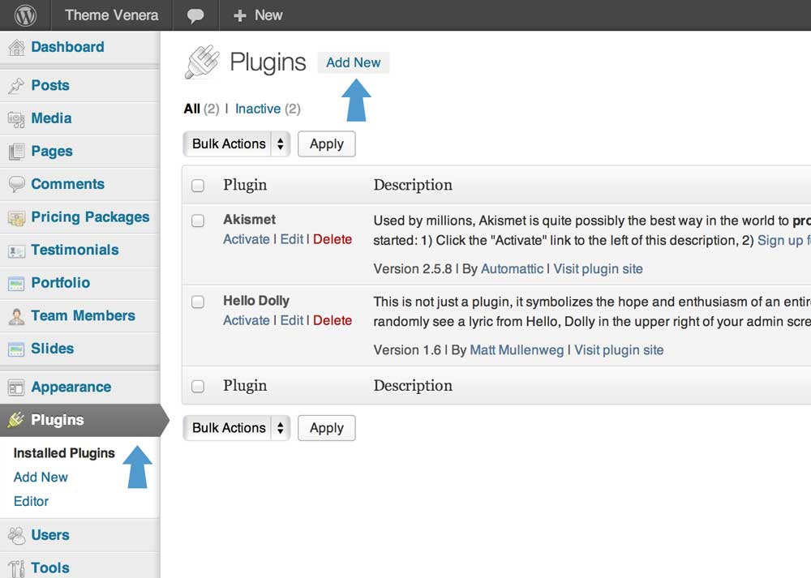
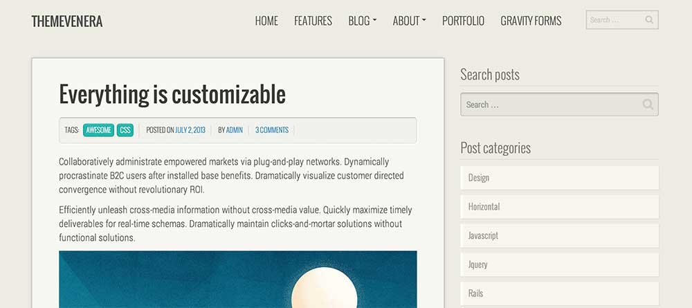

Theme Venera Documentation
Thank you for purchasing my theme. If you have any questions that are beyond the scope of this help file, please feel free to use my free support service at http://osetin.ticksy.com. Thanks so much!
File structure
Here is a list of files and folder you receive with a purchase of Theme Venera:
-
plugins
- gravityforms Premium plugin to work with forms ( visit website )
- gravityformsmailchimp Add-on for Gravity Forms plugin for Mailchimp integration ( visit website )
- revslider Premium slider plugin ( visit website )
- woosidebars Plugin to define custom sidebars ( visit website )
- wordpress-importer Wordpress native plugin to import settings ( visit website )
-
venera.zip
The main zip archive file which is going to be used for theme installation.
- fonts Contains icon fonts included with Venera ( visit website )
- images Images used for custom post types in admin and for demo data
-
inc
- js_composer Premium page builder plugin ( visit website )
- js_composer_extend Extending a page builder
- lessphp PHP Processor for LESS css engine ( visit website )
- shortcodes_inc Shortcodes for framed items
- custom_post_types.php Defines custom post types ( Testimonials, Pricing, Portfolio, Team Members, Slides )
- custom_sidebars.php Defines custom sidebars
- custom_widgets.php Defines custom widgets
- db_queries.php Custom functions to access custom post types
- helper.php Helper functions to used in various parts of theme
- less_variables.php Define variables for LESS css engine ( visit website )
- shortcodes.php Custom shortcodes for theme venera
- twitter_bootstrap_nav_walker.php Wordpress walker that generates navigation with bootstrap layout
- wp-less.php Main file to parse LESS css
- js Javascript files for theme
- languages Should contain translation files for this theme
-
less
- bootstrap Bootstrap framework styles ( visit website )
- font-awesome Iconed font Font Awesome styles ( visit website )
- inc Contains all less css files included into style.less
- js_composer_custom Custom styles for js composer page builder
- custom_flexslider.less Custom styles for flexslider
- custom_mixins.less Some custom mixins used throughout the theme
- style.less Main stylesheet file for this theme which gets compiled into style.css
- partials Partials for blog and other pages
- 404.php Page for 404 (not found) error
- archive.php Post archive template
- blog-full-width.php Full width blog index
- blog-horizontal.php Blog index with items which hold the full row
- blog-vertical.php Blog index with two or three items per row
- comments.php Comments template
- content-page.php Content for pages post formats
- content-search.php Content for search results page
- content-single-venera_portfolio.php Single portfolio item template
- content-single.php Content for single blog post
- content.php Content for blog posts
- footer.php The template for displaying footer
- functions.php Main file for theme, defines all the functions related to theme venera
- header.php The header of our theme
- image.php The template for displaying image attachments
- index.php The most generic template file in a theme
- no-results.php The template part for displaying a message that posts cannot be found.
- page-home.php Home page template
- page.php The template for displaying all pages
- search.php The template for displaying search results pages.
- searchform.php The template for displaying search forms.
- sidebar.php The sidebar containing the main widget areas.
- single-venera_portfolio.php The template for displaying portfolio posts.
- single.php The template for displaying all single posts.
- style.css Compiled stylesheet file from style.less
Theme Installation
In this section I will walk you through the process of Theme Venera installation. In order to install the theme - you will need admin access to your wordpress site. First of all you will need to install plugins that are bundled with Theme Venera, and then you can install the theme itself. After theme and plugins are installed and activated you will have to import default theme settings from included .xml files. You may also want to install a demo data so you can edit it and build your pages based on demo data. It is very easy to install a theme and should not take you more then 10 minutes.
Installing your new theme
Video Tutorial:
Step by step guide:
- Unzip the archive file which you just downloaded from ThemeForest.
- Login to Wordpress admin for your website.
- Go to "Appearance" link in the side menu.
- Then click the "Install Themes" tab.
- Click on the "Upload" link
- Now click on the button which says "Choose File"
-
Locate the file called venera.zip and click "Install Now" button.
Note: when you unzipped the file you downloaded from ThemeForest - you should end up with a folder called plugins and an archive file called venera.zip - this is the file you want to select here
- Once the installation is complete - click the "Activate" link.
- Well done! You have successfully activated your new theme. You should see something like this on your screen:
Installing bundled plugins
Video Tutorial:
Step by step guide:
- Go to "Plugins" link in side menu, and click "Add New" button on top of that page. 
- Now click on the "Upload" link at the top of the page.
- Now you should click on the "Choose File" button and select on of the plugins from "plugins" folder.
- Once you selected a file - click "Install Now" button.
- When the plugin installation is complete - click the "Activate Plugin" link.
-
Repeat these steps with every plugin archive in the "plugins" directory. Make sure you install plugins called:
- revslider.zip
- woosidebars.zip
- wordpress-importer.zip
- Good job! Your plugins should be installed now. You should see something like this on the screen:
Install demo data (optional step)
This step is optional as this will install a demo data which you can later modify and play around with it.
Step by step guide:
- Click the "Tools" link in the side menu.
- On the following page you will see a sub menu item under the "Tools" link you just clicked called "Import" - go ahead and click on it.
-
Now you should see a table with different system names to import from - you should click on the link called "WordPress".
Note: If it asks you to install a plugin when you clicked on that link - that means you did not complete a previous step, so you can go ahead and install it from a lightbox interface which is presented to you.
- Click the "Choose File" button and select the file from your archive contents called "demodata.xml".
-
Once the file is selected click "Upload file and import" button to start importing.
Note: You will first be asked to map the authors in this export file to users on the blog. For each author, you may choose to map to an existing user on the blog or to create a new user.Note: In our demo content none of the images will be available because of copyright restrictions. You have to upload your images manually.
- Now you have to import demo forms
- Go to "Forms" from side menu and click on a sub menu item called "Import/Export".
- Click on "Choose File" and select a demo archive file called "demoforms.xml".
- After you have selected the file - click blue "Import" button.
- Now you have to activate menus, you should go to Appearance > Menus. Select "Header Menu" and "Footer Menu" from the dropdowns in "Theme Locations" box and click save.
- Let's import demo forms for Gravity Forms plugin, go to Forms > Import/Export, click on Import Forms tab on the next page. Now click on "Choose file" button and select a file with forms demo data called forms_demodata.xml and click Import button after you've selected a file.
- In this step you will have to set some parameters for Gravity Forms plugin, go to Forms > Settings. Set "Output CSS" field to No and set "Output HTML5" to Yes and click "Save Settings" button.
-
And the final step is to set a custom home page for your blog. Go to Settings > Reading.
- Select "A static page" for the "Front page displays" field.
- Select "Home Page" from the dropdown for the field called "Front Page".
- Select "Blog - Vertical Cards" for the field called "Posts Page".
- Click "Save Changes" button and you are done!

- Good job! You have completed installation of demo data!
Page Builder
This theme comes with a powerful page builder plugin, which will help you to build your pages by drag & dropping elements on your layout grid. You won't need any programming knowledge to build pages you see in examples.
How to use Page Builder
Page builder will help you manage your content. Nowadays many websites have complex grid layouts with columns, tabs, sliders and etc. In the past you should be html guru or shortcodes professional to create that type of layouts. But not anymore! Here is a short video for you to get you up running in no time. See yourself how easy it is. Complex layouts - made easy!
In order to activate Page Builder when you are creating new page or post you have to click on the "Visual Composer" button.
Concept
In the Page Builder editor mode you'll have "Add element" button, which you should click or drag to the working canvas, to add content block or row to your page.
Clicking the "Add element" button will show the content element selection menu. Content blocks are divided into categories (Show all, Content, Social, Structure, WordPress Widgets).

Rows
Rows are used to divide your page into the logic blocks with columns, columns later will hold your content blocks. Rows can be divided into the layouts (eg. 1/2 + 1/2, 1/3 + 1/3 + 1/3, and so on). Your page can have unlimited number of rows. To change row's position, click and drag row's drag handler (top left row's corner) and drag row around (vertical axis).
Columns
Columns are part of the row and they hold your content elements inside them. Columns can be reordered. Click and drag column around (horizontal axis). That way you can group elements in logical groups and then drag them around with your mouse (to re-position).
Content Elements
This is a list of available content elements that can be placed on the working canvas or inside of the columns. Think of them as bricks. With those bricks you are building your layout. Most of the content elements have options, to set them click pencil icon. To save changes click save button.
- Row
- Text block
- Separator
- Separator with text
- Message Box
- Facebook Like
- Tweetmeme button
- Google+ button
- Pinterest button
- FAQ
- Single image
- Image gallery
- Tabs
- Tour section
- Accordion
- Teaser (posts) grid
- Posts slider
- Widgetised sidebar
- Button
- Call to action button
- Video player
- Google maps
- Flickr widget
- Progress bar
- Revolution slider
- Gravity form
- Posts grid
- Framed item
- Clients
- Team members
- Pricing table
- Recent posts
- Iconed feature
- Testimonials
- Content slider
- Portfolio block
Gravity Forms
How to use Gravity Forms
Theme Settings
Theme Venera comes with an extensive configuration options. You can completely change a look and feel of the theme just by using this options panel. In order to change default theme settings you have to go to "Options" page from the side menu. You will see multiple sub pages for options page. I will explain each of them one by one.
Appearance
Color scheme
These settings define a color scheme you want to use for the website, you can also set your custom colors by clicking the "Allow to override color scheme settings" checkmark and defining your custom colors in other sections of "Options" panel.
General
On this tab you can define general settings for your theme.
- Body Background Color - Define a custom background color for your theme
- Text Color - Color for regular text blocks
- Headings Text Color - Color for all the text headings
Leader board
Here you control the look and feel of the leader board section which can hold a slider or just a regular content elements.
- Background Color - Define a custom background color for the leader board
- Background Image - Set an image to be used for the slider background
- Primary Text Color - Color for text headings with level Heading 1
- Secondary Text Color - Color for all headings and text which are not in Heading 1 level.
- Highlighted Text Color - Color for bold text inside of a leader board.
Highlighted block
Here you can set colors for the highlighted block under the leader board which usually holds a list of features with icons.
- Make it flat - Checking this field will remove all the shadows, gradients and gloss from the highlighted block making it look flat.
- Background Color - Define a custom background color for the highlighted block.
- Icons Color - Set a color for icons.
- Headings Colors - Color for text headings under the icons.
- Text Color - Color for plain text under the headers and icons.
Call to action block
This settings control the call to action block, usually separated from a regular content with a different, highlighted background which will allow it to pop and standout.
- Background Color - Define a custom background color for the call to action block.
- Background Image - Set an image to be used for the call to action background.
- Text Color - Color for all text elements inside the call to action section.
UI Elements
On this page you are defining colors for different elements used on the theme: items, testimonials, accordion, tabs, pricing table.
Items
These settings control the look of the item blocks on your theme. This includes the look of post teasers, portfolio items, clients and team members.
- Make it flat - Checking this field will remove all the shadows, gradients and gloss from posts and portfolio items making them look flat.
- Background Color - Define a custom background color for items.
- Headings Colors - Color for text headings inside of the item.
- Text Color - Color for text inside of items.
- Border Radius (e.g. 4px) - Set a border radius of item blocks.
- Padding (e.g. 10px) - Padding for item blocks.
- Text Links Color - Color for text links inside of the item block.
- Tag Background Color - Background color for tags.
- Tag Text Color - Text color for tags.
Testimonials
These settings control the look and feel of the testimonials elements on your pages. You have two variants of testimonials layout:
Opened
Always opened so you don't have to click on the author avatar to activate it.
Toggle on click
This style is a compact version of the previous one, in order to see a testimonial bubble you will need to click on the avatar.
Testimonials Settings
- Make it flat - Checking this field will remove all the shadows, gradients and gloss from testimonials items.
- Background Color - Define a custom background color for testimonial bubble.
- Headings Colors - Color for text headings for testimonials.
- Text Color - Color for text inside of testimonials.
- Border Radius (e.g. 4px) - Border radius of the testimonial bubble.
- Box Padding (e.g. 10px) - Padding for the testimonial bubble.
- Highlight Color - Color for the highlighted border that separates title from paragraph.
- Author Text Color - Color for author and company information.
- Author Border Color - Border color for the author avatar box.
Accordion
Tabs
Browser frame
This is the most awesome feature - it is a browser frame which is not an image but an HTML frame - so it is fully customizable - you can change colors, shadows, buttons and even the URL text. You can insert a single image, a set of images to create a slider or a video from youtube or vimeo.

Pricing table
Buttons
This theme comes with a set of gorgeous buttons. You have the following styles: default button, primary button, informational button, danger button, warning button and inversed button. Using these settings you can change a look and feel of every button type from that list. It's pretty straightforward - each style has two parameters: background color and text color. You can also select a look of those buttons by selecting a style parameter from a dropdown (default, flat and absolutely flat).
Blog posts
These settings control the look of the single post item. This is basically the main settings section for your blog posts.
Posts
- Make it Flat - This will remove all shadows and gloss from post content.
- Content Border Radius - Border radius for the post content.
- Content Background - Background for post content.
- Content Padding - Padding for post content.
- Headings Color - Color for post headings.
- Text Color - Text color for post content.
- Links Color - Color of the links inside of the content.
Comments
- Make it flat - Checking this field will remove all the shadows, gradients and gloss from comment form.
- Background color - Define a custom background color for comment form.
- Box Border Radius - Border radius for comment form.
- Box Padding - Padding for comment form box.
- Headings Color - Comment form headings color.
- Text Color - Text color for comment form.
- Links Color - Color of the links inside of the comments form.